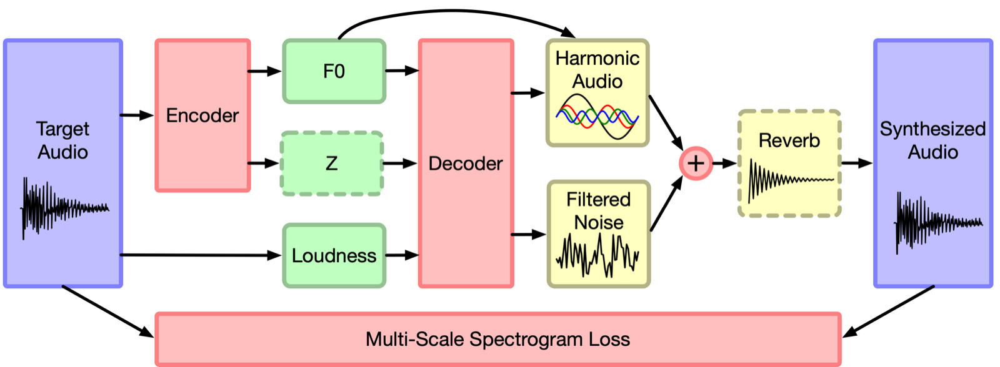
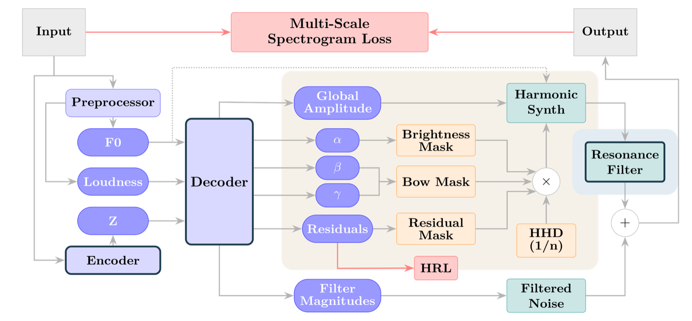
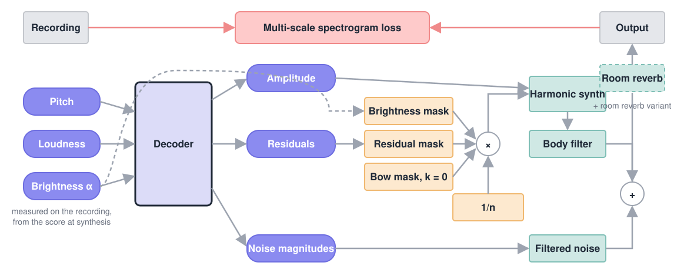

Data, preprocessing and training shared by every part first, then one part per question with its models, audio and losses.
The solo violin set is all training, as in the DDSP paper. The MOSA sets have a training set, a validation set and a test set of whole takes (training 13.8 h, of which 36 min of ev03).
| Set | Content | Audio | Players | Rooms |
|---|---|---|---|---|
| Solo violin (Garner) | The DDSP paper's set: Bach, Partita No. 1 BWV 1002, five movements played by John Garner (MusOpen, public domain). | 13 min | 1 | 1 |
| MOSA, one player (ev03) | The violin takes of one player of the MOSA dataset (Huang et al., 2024, data), in one recording space. | 48 min | 1 | 1 |
| MOSA, all players | The violin takes of all fifteen MOSA players, in two recording spaces. | 16.8 h | 15 | 2 |
Do the physical constraints cost anything when both models read the audio they resynthesise?
The model of Engel et al. (ICLR 2020), run with the published code
(magenta/ddsp 3.7.0, solo_instrument.gin).

From Engel et al. (2020).
The model of our AES 2026 paper (code).

DDSP always carries its 3 s reverb; the DDSP-Violin + room reverb rows add the same one, so those are the like-for-like pairs. Longer training: the same settings continued, 150K steps on ev03 and 300K on all players, one seed.
| Model | Double (II)training set | Correntetraining set | Loss |
|---|---|---|---|
| Recording | 0:00 | 0:00 | |
| DDSP | 0:00 | 0:00 | 5.56 |
| DDSP + z | 0:00 | 0:00 | 5.26 |
| DDSP-Violin | 0:00 | 0:00 | 5.19 |
| DDSP-Violin + room reverb | 0:00 | 0:00 | 5.05 |
| DDSP-Violin + z | 0:00 | 0:00 | 5.14 |
| DDSP-Violin + z + room reverb | 0:00 | 0:00 | 5.01 |
| Model | ev03, Bach, take 1training set | ev03, Bach, take 2test set | Loss |
|---|---|---|---|
| Recording | 0:00 | 0:00 | |
| DDSP | 0:00 | 0:00 | 6.31 |
| DDSP + z | 0:00 | 0:00 | 6.06 |
| DDSP-Violin | 0:00 | 0:00 | 6.35 |
| DDSP-Violin + room reverb | 0:00 | 0:00 | 6.26 |
| DDSP-Violin + z | 0:00 | 0:00 | 5.96 |
| DDSP-Violin + z + room reverb | 0:00 | 0:00 | 5.92 |
| Longer training, one seed | |||
| DDSP, 150K steps | pending | pending | 6.32 |
| DDSP-Violin + z + room reverb, 150K steps | pending | pending | |
| Model | ev03, Bach, take 1training set | ev01, Bachtest set | yv02, piece de2test set | Loss |
|---|---|---|---|---|
| Recording | 0:00 | 0:00 | 0:00 | |
| DDSP | 0:00 | 0:00 | 0:00 | 6.62 |
| DDSP + z | 0:00 | 0:00 | 0:00 | 6.07 |
| DDSP-Violin | 0:00 | 0:00 | 0:00 | 6.14 |
| DDSP-Violin + room reverb | 0:00 | 0:00 | 0:00 | 6.17 |
| DDSP-Violin + z | 0:00 | 0:00 | 0:00 | 5.73 |
| DDSP-Violin + z + room reverb | 0:00 | 0:00 | 0:00 | 5.77 |
| Longer training, one seed | ||||
| DDSP, 300K steps | pending | pending | pending | |
| DDSP-Violin + z + room reverb, 300K steps | pending | pending | pending | |
On takes outside the training set, DDSP-Violin without z matches DDSP without z on one player and beats it on all players; with z it beats DDSP + z on both. On the solo violin set it is lower than DDSP in both forms. The room reverb helps on the two small sets, not on all players. DDSP at 150K steps on ev03 is no better than at 50K.
What is lost when the model reads nothing from the audio, only pitch, loudness and the measured brightness, as at synthesis from a score?
The synthesiser of the MIDI studies: the same model driven by curves alone, nothing read from the audio at synthesis.

The two reference rows repeat Part 1.
| Model | Double (II)training set | Correntetraining set | Loss |
|---|---|---|---|
| Recording | 0:00 | 0:00 | |
| DDSP | 0:00 | 0:00 | 5.56 |
| DDSP-Violin + z | 0:00 | 0:00 | 5.14 |
| DDSP-Violin from curves | 0:00 | 0:00 | |
| DDSP-Violin from curves + room reverb | 0:00 | 0:00 |
| Model | ev03, Bach, take 1training set | ev03, Bach, take 2test set | Loss |
|---|---|---|---|
| Recording | 0:00 | 0:00 | |
| DDSP | 0:00 | 0:00 | 6.31 |
| DDSP-Violin + z | 0:00 | 0:00 | 5.96 |
| DDSP-Violin from curves | 0:00 | 0:00 | |
| DDSP-Violin from curves + room reverb | 0:00 | 0:00 |
| Model | ev03, Bach, take 1training set | ev01, Bachtest set | yv02, piece de2test set | Loss |
|---|---|---|---|---|
| Recording | 0:00 | 0:00 | 0:00 | |
| DDSP | 0:00 | 0:00 | 0:00 | 6.62 |
| DDSP-Violin + z | 0:00 | 0:00 | 0:00 | 5.73 |
| DDSP-Violin from curves | 0:00 | 0:00 | 0:00 | |
| DDSP-Violin from curves + room reverb | 0:00 | 0:00 | 0:00 |
First seeds: the curves model sits 0.1 to 0.3 above the model that reads the audio, below DDSP on the solo violin set and on all players, above it on ev03. The room reverb helps it on every set.
Which parts of the model limit it?
Each row is the curves model of Part 2, without the room reverb, with one change. Parameter loss: the distance of the harmonic levels and noise bands to the ones fitted to the recording, read from the decoder or measured on the output audio. One body filter per player: the player given as an input.
| Model | ev03, Bach, take 1training set | ev01, Bachtest set | yv02, piece de2test set | Loss |
|---|---|---|---|---|
| Recording | 0:00 | 0:00 | 0:00 | |
| DDSP-Violin from curves | 0:00 | 0:00 | 0:00 | |
| Residuals | ||||
| Residual loss 0 | 0:00 | 0:00 | 0:00 | 6.21 |
| Residual loss 1 | 0:00 | 0:00 | 0:00 | 6.34 |
| Residuals within 12 dB | 0:00 | 0:00 | 0:00 | 6.17 |
| Brightness | ||||
| Brightness fixed at the set median | 0:00 | 0:00 | 0:00 | 7.01 |
| Filters | ||||
| Minimum-phase body filter | 0:00 | 0:00 | 0:00 | 6.25 |
| One body filter per player | pending | pending | pending | |
| Room reverb 0.5 s | 0:00 | 0:00 | 0:00 | 6.22 |
| Noise | ||||
| 257 noise bands | 0:00 | 0:00 | 0:00 | |
| Shorter noise window | pending | pending | pending | |
| Losses | ||||
| Parameter loss added | pending | pending | pending | |
| Parameter loss on the output audio | pending | pending | pending | |
| Short MSSL terms only | pending | pending | pending | |
| Mel loss added | pending | pending | pending | |
| Inputs | ||||
| Aligned pYIN pitch | pending | pending | pending | |
| Model | ev03, Bach, take 1training set | ev03, Bach, take 2test set | Loss |
|---|---|---|---|
| Recording | 0:00 | 0:00 | |
| DDSP-Violin from curves | 0:00 | 0:00 | |
| Residuals | |||
| Residual loss 0 | pending | pending | |
| Residual loss 1 | pending | pending | |
| Residuals within 12 dB | pending | pending | |
| Brightness | |||
| Brightness fixed at the set median | pending | pending | |
| Filters | |||
| Minimum-phase body filter | pending | pending | |
| One body filter per player | pending | pending | |
| Room reverb 0.5 s | pending | pending | |
| Noise | |||
| 257 noise bands | pending | pending | |
| Shorter noise window | pending | pending | |
| Losses | |||
| Parameter loss added | pending | pending | |
| Parameter loss on the output audio | pending | pending | |
| Short MSSL terms only | pending | pending | |
| Mel loss added | pending | pending | |
| Inputs | |||
| Aligned pYIN pitch | pending | pending | |
All players so far: fixing the brightness at one value costs 0.7, so the measured brightness curve carries information the decoder uses. Freeing the residuals helps (12 dB, loss 0), constraining them hurts (loss 1). The filter changes move the loss by 0.05 or less.
The performance model, from MIDI notes to the curves the synthesiser reads.